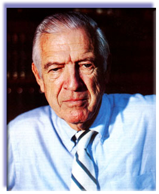

John Ott likes to use the word serendipity to describe how his parttime hobby in time-lapse photography sprouted into a pioneering career in the new field of photobiology. Thirty years ago, the Chicago banker was spending his free time photographing plants under fluorescent lights in his basement and filling his kitchen pantry with hundreds of reels of film. His time-lapse sequences showing flowers opening and fruits ripening were used on the first Chicago television station, in several Walt Disney nature documentaries, and in the feature film On a Clear Day You Can See Forever. However, in the course of his work, Ott often had trouble coaxing seedlings to grow or blossoms to form, as in the case of a stubborn pumpkin vine (commissioned by Disney) which produced only all male or all female flowers, depending on what type of fighting the plant received.
Intrigued by the possible connection between varying light waves and plant growth patterns, the amateur scientist built a special plastic-walled greenhouse in his backyard, and there the experiments continued, augmented by an impressive army of photographic lights set to turn on automatically for each time-lapse frame. Ott was so astounded-and encouraged-by his findings over the next few years that he carried his theories over into the animal world; Loyola University was so impressed with his results that they awarded him an honorary doctorate in science.
Eventually, Ott left banking and founded the Environmental Health and Light Research Institute to coordinate his ongoing studies into the ways in which fight can, in the proper spectral balance, enhance the health of plants, animals, and even humans . . . or seemingly cause certain disorders if received in a distorted or incomplete spectrum. Dr. Ott's research efforts generally met with polite indifference or derision from the scientific community, but he soon began to attract public attention with his theory of "malillumination"-a condition he likens to malnutrition. Malilluminanon, he believes, is brought about by our unintentional limiting of our intake of full-spectrum daylight by shielding ourselves with such things as tinted windows, windshields, sunglasses, and suntan lotions. Working with manufacturers, Ott went on to help develop an allnew indoor lighting system which mimics the full-spectrum range of natural sunlight, and to devise experiments using the special fixtures.
These days, Dr. Ott lives in a lush, junglelike setting on the Gulf of Mexico, where he's "trying to retire. " The windows in his house are fitted with special ultraviolet-transmitting plastic, the light bulbs in his lamps are incandescent daylight blue, his television set sits inside a lead-lined box that's rigged with mirrors, and his "outdoor office" is a private retreat where he and his wife daily soak up an hour's worth of Florida sunshine. A modest man, Ott continually talks about "we" and "our work," as if to imply that he has a research colleague or an assistant. He doesn'tnot even a secretary to handle the calls and mail that come in from all over the world in response to his articles and books (My Ivory Cellar, 1958; Health and Light, 1973; and Light, Radiation, and You, 1982).
Still vigorous at 75, Dr. Ott maintains a busy schedule of travel, scientific conferences, and appearances on radio and network television talk shows. Recently, he met with former MOTHER-staffer Jeanne Cameron to discuss his work, both past and present. The following edited version of their conversation will perhaps "shed some light"on a topic that may be of vital importance to anyone who's interested in good health. At the very least, it should make us think hard about some of the often overlooked environmental factors that just might affect our physical and emotional well-being.
PLOWBOY: Dr. Ott, you've been called a "Rousseau of our day" and a "natural philosopher in the tradition of the nineteenth century." Last year, your work was mentioned along with that of scientists at Harvard in a Smithsonian magazine article on light research. And that's after a successful banking career! You must have been something of a whiz kid in school.
OTT: Actually, I never went to college. The bank enrolled me in some finance courses at Harvard Business School, but I never formally studied chemistry, biology, botany, or physics-all the subjects I'm most interested in now. I've been told that was a blessing, because it's allowed me to look at things in a fresh, nontraditional way. And there may be some truth in that. I've always had to start from scratch and look carefully at the results of my experiments, solving problems by trial and error.
PLOWBOY: When did you start working with time-lapse photography?
OTT: I got involved in that as a hobby in 1927, when I was still in high school. Then, after I started work at the bank, I had to develop automatic timers to keep taking pictures of my plants at regular intervals while I was away. At that stage, whenever a plant wouldn't grow, I could just try something else. But once I began making films commercially, I couldn't just throw things out-I had to get the ordered jobs done! For example, the Disney people wanted a film of a pumpkin forming and maturing on the vine. When I ran into trouble getting the plant to produce both male and female flowers (as it normally does), I tried to persuade them to use a tomato. I had great pictures of a tomato ripening! But they needed the shots for a script about Cinderella's chariot, so I kept trying with my pumpkin. Despite my efforts, all the pistillate blossoms would dry up, turn black, and drop off before they were pollinated. Then, just as I was getting desperate and the assignment was overdue, the fluorescent lights I had been using over the plant to supplement light from the basement skylight started to burn out, so I went to the hardware store for some replacements.
To my amazement, this time all the female flowers developed fully and the staminate buds dropped off! Well, when the pistillate blossoms opened, it took a lot of doing to find some pollen from a male flower, but we did it and finally produced a pumpkin for Walt Disney's film Secrets of Life.
PLOWBOY: What caused the change in the vine's flower production?
OTT: After checking everything I could think of, I remembered that when I went back to the hardware store for replacement fluorescent tubes, I'd purchased daylight white instead of the cool white lights I had used before. With further experiments, I found that I could get 100% control of development of either staminate or pistillate blossoms by switching the type of lighting used over the plant!
PLOWBOY: So this was your first clue that different kinds of light could have varying effects on living things?
OTT: Yes. And when I added a microscope to my equipment and started taking time-lapse microphotography, I found things no one had ever seen or suspected. At first, I worked with cells of elodea grass, and observed the streaming of the chloroplasts in an established pattern when exposed to natural sunlight. I found that by putting different colored filters over the microscope light, I could make the chloroplasts go in different directions, stand still, or return to their original pattern. A red filter, for instance, caused some of the chloroplasts to bunch up in a corner of the cell and the remaining ones to shortcut through the middle and not line up at the ends of the cell, as they normally do during photosynthesis. This showed that the different chloroplasts have different wavelength absorption bands and that the full spectrum of visible light is essential in order to produce a complete process of photosynthesis.
Eventually, I did this same kind of study with animal cellsspecifically the pigment epithelial cells from the retina of a rabbit's eye. In that case, too, I found that I could create radical changes within the cells by changing the color of the microscope light. I could increase their metabolic activity, I could slow them down, I could kill them.
PLOWBOY: What were some of your early experiments with animals?
OTT: As a result of my appearances on a Chicago TV show, I was asked by the members of the biology department of Loyola University to help them with some research on fish eggs. They needed me to take time-lapse pictures of the embryos' development. Just on a hunch, I suggested that we hang some of the various fluores cents I had used on the pumpkin vines over the fish tanks. Well, that was the most ridiculous thing they'd ever heard of, but they agreed. We had cool white, daylight white, and pink tubes. After several weeks, we discovered that all the eggs that had hatched under the pink light had grown into females . . . a result opposite to the one I'd had with the pumpkin flowers, strangely enough. Later, though, the researchers noticed that some of these "female" guppies were beginning to show signs of male coloration! The final results were that 80% of the fish turned out to be females and the other 20070 were "questionable."
When those findings were publicized, I received a letter from a chinchilla breeder in New Jersey who was having problems-as most chinchilla breeders do-obtaining enough females in her litters. When chinchillas are raised indoors, where the length of night and day can be controlled in order to enhance the development of heavy pelts, the sex ratio in the litters changes from the normal 50:50 to about 95% males. I advised the breeder to replace all the regular incandescent lights near the chinchillas' cages with daylight blue bulbs, which cut down on the high ratio of red and infrared found in the regular incandescent. The lights were installed, the litters started coming out 95% female, and daylight bulbs are now in worldwide commercial use by chinchilla ranchers to increase the number of breeding females!
This, of course, wasn't a controlled experiment, but it did indicate a very important point-that certain biological responses in animals are linked to specific wavelengths. The question was, how does this linkage function? Obviously, the wavelength energy of light was controlling growth in the elodea chloroplasts, but how could light affect the fish and chinchillas? Well, the poultry industry knows that light received through the chicken's eye stimulates its pituitary gland and increases egg production. That's why the lights are commonly left on at night in chicken houses. This seemed like an important clue to me. The pituitary gland is the master balance wheel of the entire glandular system, not only in chickens, but in other animals as well, including humans. Maybe, I thought, the principles of photosynthesis do carry over from plant life into animal life.
So I got some friends who were qualified lab technicians to help me with some controlled studies of rats and mice kept under different wavelengths of light . . . and we got results! In our studies, the most significantly abnormal conditions were found under pink fluorescent, which represents a concentration of energy toward the red end of the visible spectrum. What we found were excessive calcium deposits in the heart tissue, smaller numbers of young in the litters, significantly greater tumor development (which has now been confirmed by studies at six major medical centers), and a strong tendency toward irritable, aggressive, and cannibalistic behavior. Some of the other studies at the medical centers, including one completed in 1959 at the Ben May Cancer Research Center at the University of Chicago, showed severe hair loss and skin damage in some mice kept under pink fluorescent light for six months.
PLOWBOY: And what led you from doing studies with animals to making conclusions about human reactions to different wave-lengths?
OTT: Based upon those experimental results, I speculated that if the chemistry of the human body responds to glandular actions controlled by the pituitary gland responding to light energy, then the characteristics of that light energy would be a very important factor. Different types of light and lighting conditions-natural unfiltered sunlight, various kinds of artificial light, or natural sunlight filtered through different kinds of glass (such as window glass or eyeglasses) could, I reasoned, affect the physical well-being of an individual.
PLOWBOY: Do you feel that there could be a definite link between some chronic diseases and a lack of exposure to natural sunlight?
OTT: Yes; I'm referring here to what I call biological combustion. My studies have indicated that light is a nutrient, similar to all the other nutrients we take in through food, and that we need the fullspectrum range of natural daylight. This is a fact long since proven by science. In 1967, a paper presented by three Russian scientists to the International Committee on Illumination said, "If human skin is not exposed to solar radiation (direct or scattered) for long periods of time, disturbances will occur in the physiological equilibrium of the human system. The result will be functional disorders of the nervous system and a vitamin-D deficiency, a weakening of the body's defenses, and an aggravation of chronic diseases."
That's the condition I now call malillumination, a lack of the necessary amount of sunlight, just as malnutrition is a lack of the proper nutrients in our diets. Malillumination occurs when wavelengths are missing in various types of artificial light or are filtered from natural light passing through window glass, windshields, eyeglasses (particularly tinted contact lenses or sunglasses), smog, and even suntan lotions. Those particular minerals and chemicals in the individual cells of our bodies that would normally be metabolized by the missing wavelengths remain in the equivalent of darkness.
PLOWBOY: In other words, you can't extract the energy from food materials if you don't also get the proper wavelengths to help break them down chemically.
OTT: That's right. Let me give you a couple of examples.
Since the 1950s, it's been common to treat jaundice in newborn babies with phototherapy of blue light (the wavelength that's most often missing from our normal indoor lights). Doctors found that the blue light enabled the babies' systems to break down the excess bilirubin serum in the blood and correct the jaundice condition. Westinghouse now makes a very strong blue lamp for use in hospital nurseries, but it tends to nauseate the nurses! Well, if it's making the nurses sick, what's it doing to the babies receiving their first direct exposure to light? Sure, the blue wavelengths help allow the bilirubin serum to be absorbed faster, but there may well be side effects from the lack of other wavelengths in the full spectrum.
Some years ago, I worked with Dr. Jerold Lucey, professor of pediatrics at the University of Vermont College of Medicine and a past president of the American Academy of Pediatrics, in some of his photo-theraphy experiments. He now uses full-spectrum fluorescent lights containing the normal amount of blue in sunlight. This corrects the jaundice and gives the infants a balanced dose of other wavelengths.
PLOWBOY: This brings up the question of ultraviolet light. For years, we've all been warned of the dangers of full sunlight as a cause of skin cancer and other disorders, and the finger usually points to ultraviolet radiation as the culprit. Yet you're telling us we need more ultravioletmuch more than we're getting from artificial light or through windows. What's the real story?
OTT: Without doubt, too much UV is harmful-particularly the shortwavelength, or germicidal, ultraviolet, which is mostly filtered out of sunlight by the earth's atmosphere. But the fear of getting too much ultraviolet is causing many people to overprotect themselves from sunlight, to the point that they're creating a deficiency in a very essential life-supporting energy.
This unnecessary fear of ultraviolet is probably a result of a general lack of understanding of the different intensities of near, or longwavelength, ultraviolet and far, short-wave ultraviolet, some of which does reach the earth's surface. Life on this planet has evolved under a balance of tiny amounts of short-wavelength ultraviolet (comparable to the very low levels of general background radiation) and much higher intensities of long-wavelength ultraviolet (comparable to that in visible outdoor natural light). It wouldn't take much of an increase in the short-wavelength ultraviolet to upset that biological balance. That's why artificial sunlamps (which give off a peak of energy in the far, short-wavelength UV) become so damaging with overexposure.
PLOWBOY: Tell us about the development of full-spectrum light.
OTT: About 25 years ago, I helped design the Vita-Lite for the DuroTest Corporation. We took the company's color-matching fluorescent tube and added an ultraviolet phosphor. The color-matching tube is full-spectrum only in the visible wavelengths, so the added ultraviolet made it even closer to normal daylight. This was a big step forward, but now it's been improved further. We found that the ultraviolet phosphor in the Vita-Lite has a much shorter burning life than the phosphors that produce the visible light, so the fullspectrum benefit is gone long before the whole thing burns out.
So I worked up a new type of light, in which the ultraviolet is produced by a separate tube with a separate socket in the fixture, and you can easily see when it needs to be replaced.
PLOWBOY: How often does it need to be changed in the life of the whole light?
OTT: The black light lasts about one-third of the life of the big tube, so you'd probably have to replace it twice.
PLOWBOY: Do you have to order extra black-light tubes from the manufacturer?
OTT: No, you can get those from most any hardware store. But you're also going to have to change the lead foil shield, which screens out the harmful radiation coming from the cathodes at the ends of all fluorescent tubes. It's like a little sleeve that fits over the end, a double wire-mesh grid that stops the radio frequency waves. I tried to get the people at Duro-Test to make these changes, but they wanted to keep on manufacturing the Vita-Lite as it is. So my new light, the Ott-Lite, is now sold by Environmental Systems, Inc. It's been on the market for about three years.
PLOWBOY: Have there been any studies to assess the health effects of full-spectrum lighting?
OTT: Oh, yes. You know, it's common knowledge that when rats or mice are bred in captivity for laboratory experiments, the male has to be removed from the cage before the litter arrives, or he'll cannibalize the young. But we found that when you place the cages in natural daylight or under our full-spectrum lights with radiation shielding, you don't have to remove the male. He'll have a normal parental instinct and help take care of the young. I've taken the same pair of animals and moved them back and forth from natural to artificial light. Under the full-spectrum radiation-shielded lighting, they'll be quite calm and manageable, but you move them back under fluorescence for the next litter and the male will start attacking the young. Their response to the change occurs that fast.
We've also had great results with some experiments done in the poultry industry with laying hens. In the old days, when chickens were kept outdoors on small farms, a laying hen was productive for five years, but under the "improved" methods of crowding chickens into cages in fluorescent-lighted houses, their productive life span usually lasts only about 13 months. Then they have to be replaced, at a cost of $125,000 for a standard 50,000-bird house. John Albright of Environmental Systems set up some studies in which full-spectrum lighting was installed in henhouses. Almost immediately, egg production increased 8.5070, the hens produced larger eggs with stronger shells, and the birds began eating less feed-which means that with the increased wavelength spectrum they were receiving, they were absorbing the nutritive value of their feed better and actually needed to eat less. The chickens in this experiment also escaped a severe outbreak of avian flu which devastated the Pennsylvania poultry industry in the winter of 1983-84. But the most interesting thing was that the eggs laid by these "lucky" birds contained 22070 less cholesterol! Since the wavelength absorption of cholesterol is in the ultraviolet range, I think we're onto something here. If chickens (and people) don't get enough ultraviolet, it may be that the cholesterol level builds up, just as the bilirubin serum does in the absence of blue light.
PLOWBOY: Has the poultry industry as a whole shown any interest in these findings?
OTT: The Perdue people, who are among the largest producers, have been testing the lights, and they've confirmed our results. They're talking right now about converting all their henhouses over to fullspectrum lighting. And other livestock companies are finding that it also works with turkeys and hogs and even dairy cattle. Pretty soon people will realize it works on humans, too! We've already shown it works on schoolchildren.
PLOWBOY: You put full-spectrum lights into classrooms?
OTT: Yes, we did a study in the Sarasota County school system in 1973; we placed radiation-shielded full-spectrum lights in two rooms for five months and left the standard cool white fluorescent tubes in two control group classrooms. Our experiment found that in the groups under our lights, several extremely hyperactive children calmed down completely and were able to overcome their learning disabilities. Interestingly enough, the children in that classroom also developed onethird fewer dental cavities than the control group during that fivemonth period! We used time-lapse cameras in each classroom to record incidences of disruptive behavior, and the fluorescent classrooms always had more.
A similar kind of experiment was conducted in 1975 in a California public school and another in Washington State; they had similar results.
PLOWBOY: Yet I understand that research people from General Electric denounced your study and conducted one themselves, which came out quite differently.
OTT: Their study was set up to disprove ours. They used only one classroom with seven children, whereas we had four separate rooms with a total of 98 students. Every week, the G.E. researchers changed the lighting back and forth from fluorescent to radiation-shielded fullspectrum, so that the children were under one particular type of light for only five days at a time! They also left the window shades partially open, right at the children's eye level when they sat at their desks. That, of course, let in a lot of natural daylight, which-even though filtered through the window glass-would alter the artificial lighting somewhat.
In fact, I have a notarized statement from a gentleman who claims that one of the coauthors of the article summing up the G.E. study ("Fluorescent Lighting: A Purported Source of Hyperactive Behavior," published in the journal of Abnormal Child Psychology) has since admitted to him that the study was designed to discredit my work.
PLOWBOY: That's probably not the only instance of opposition that you've encountered. After all, you've been treading on corporate and scientific toes for 30 years.
OTT: It started way back when I was trying to find a home for my research institute in order to do studies on the link between health and light in animals. I was turned down flat by several universities because they thought it would damage their scientific reputations to sponsor the research that I was proposing.
I've also been rejected for grants by most of the major cancer research institutes in this country, including the American Cancer Society, the National Cancer Institute, and the National Institutes of Health. And those rejected proposals were co-signed by very prominent cancer researchers and doctors! The answer was always, "There's nothing about this in the literature." But why should there always be such antagonism toward new ideas unless they can be supported by "the literature"? It seems to me that one serious problem with our present approach to cancer research lies in the fact that the answer may not be in the literature. If it were, then someone would surely have found it by now.
You know, although they're not widely reported, there have been quite a few controlled studies involving light exposure and cancer in rats and mice. The findings reported by six major medical centers are that specific wavelengths of light influence the number, size, and growth rate of tumors in laboratory animals-but that's being completely ignored by both the National Cancer Institute and the American Cancer Society! One particular study carried out at the Wills Eye Hospital and Research Institute in Philadelphia showed that radiationshielded, full-spectrum lighting may be an important environmental factor in slowing down tumor development in C3h mice, a strain that's acutely susceptible to cancer.
PLOWBOY: Dr. Ott, in recent years you've turned from work in visible and ultraviolet light to research in the far ends of the spectrum. In your most recent book, you deal with the possible dangers of the constant bombardment of low-level radiation emitted by many of the technological "comforts" that have recently entered our livesmicrowave ovens, digital watches, calculators, computers, word processors, smoke detectors, certain manmade fibers, and airport and weather radar stations, to name a few. How did you first become aware of these influences on our health?
OTT: Actually, this work goes way back. While I was trying to grow geraniums under fluorescent lights for On a Clear Day, I noticed that the plants situated under the cathodes at the ends of the tubes showed stunted growth. That, among other things, led to the development of a lead shield for the Ott-Lite so that it wouldn't emit harmful X-rays. Those cathodes are the same as those used in X-ray machines and TV picture tubes . . . so I also looked into the question of radiation emission from color television sets. I did a lot of experiments that involved placing young rats in front of unshielded picture tubes and then moving them behind a lead shield. Without the shielding, they became very aggressive, then grew lethargic, and eventually died. Bean plants showed the same results-growing wildly at first, then flopping over and dying. In both cases, the lead shield caused great improvements in overall health and behavior.
Because of those findings, former U.S. Representative Paul Rogers asked me to testify before the House Sub-Committee on Public Health and Welfare. That led to government studies and to more hearings and, eventually, to the passage of the Radiation Control Act of 1968, which set safety levels for exposure to X-rays. This was a big step in the right direction, but the act didn't go as far as I'd hoped it would.
To my knowledge, though, there is still very little research being done on the accumulated effects of low-level radiation on biological systems. Meanwhile, we're becoming more and more alarmed over lower academic achievement among school-children, rising levels of stress, the general increase of crime and violence, and widespread use of drugs. Well, I see a clear connection between all those problems and the accumulated effects of background radiation from the electronic devices in common use today.
PLOWBOY: What about video display terminals? I've seen a number of conflicting reports concerning their safety.
OTT: I repeated the bean plant-television experiments using VDTs, and I found that the low-level radiation from the computer terminals caused a mottling and yellowing effect on the leaves of formerly healthy plants. It started with spots, then the whole leaf would turn yellow and drop off.
PLOWBOY: How close to the video display terminal did you place the plants?
OTT: About ten feet away, and I protected them with three solid lead shields, and the terminal itself had leaded glass on it! I took some of the leaves to a nearby USDA station. They said it was a combination of two fungus diseases and gave me some sprays to use. I went home, didn't use the sprays, moved the plants away from the computers . . . and the new leaves came out perfectly green and healthy.
Later on, I moved them back in front of the VDTs, and the plants got sick again.
PLOWBOY: So lead shields did work with the bean plants in front of televisions, but not in front of computers?
OTT: We just learned, a couple of weeks ago, that there's evidently something given off by a VDT that's not given off by a television set with solid-state tubes. Whatever it is, it goes right through lead! But we've also found that the Ott-Lite can help counteract this.
Now, keep in mind that all these devices I've tested fell well within government safety standards for radiation levels. The emissions are too low to measure with standard equipment . . . so I have to use bean plants to show that even these relatively low levels can have an effect on biological systems. Since our government safety standards were first enacted, the "safe" levels of radiation have been lowered eight times . . . and they're still 1,000 times higher than the levels allowed in the Soviet Union!
PLOWBOY: Has there been any official response to your research with low-level radiation?
OTT: The reaction has been good and bad. In 1981 I was asked to give a seminar on the effects of low-level radiation on human health and behavior at the Bureau of Radiological Health, which is a division of the FDA. I felt I was well received, and soon after that I received a written contract from the BRH people to help in ongoing research in light and radiation.
So recently I sent them information about my latest work with live blood cell analysis and VDT radiation, thinking they'd be really interested. Well, like most government divisions, they'd been reorganized (again) and the fellow who was now in charge wrote me a letter explaining that I was mistaken. Their contract with me was just for the one day I was there, several years ago . . . but he did remember the "interesting entertainment" I had provided for them.
PLOWBOY: Tell us about this recent research in live blood cell analysis.
OTT: I'm very excited about this. It's some of the most convincing evidence I've come across, because the results are right there to be seen. I'm working on this with Dr. James Martin, a local chiropractor. We've found that when a drop of human blood is placed on an ultraviolet-transmitting microscope slide, covered with a standard cover slip, and propped against a video display terminal for five minutes, the red blood cells will begin to clump together in long chains called rouleaux. These rouleaux can clog the capillaries and cut down blood supply to the brain, possibly contributing to such conditions as Alzheimer's disease.
We thought there could be some sort of magnetic field given off by the VDT that magnetizes the iron in the red blood cells and causes them to clump together like little magnets. So then we put the same slide under a full-spectrum Ott-Lite, and the clumping disappeared within five minutes! The cells broke apart and went on their normal way.
Well, people said we put the slide too close to the VDT to make the experiment realistic. After all, people don't lean against their computers; they sit a couple of feet back. So we repeated the testing in a different way. We used a friend of mine, a real computer buff, as our guinea pig. On a Friday evening, after he had spent his customary eighthour day in front of the VDT, we took a sample of his blood and found severe rouleaux clumping. Well, he spent a lot of time outdoors that weekend, didn't watch television or go near his computer, and on Sunday we took him sailing, without sunglasses. Monday morning, we tested his blood again, and it was perfectly clear. No cell clumping at all.
Partly as a result of that, another friend of mine is now planning to market a new version of our full-spectrum light to be used in computer rooms and offices with VDTs. It has a little more ultraviolet added than the regular Ott-Lite, but still at a safe level of exposure. It will be sold as the Ott Computer Safety Light!
PLOWBOY: What other things are you working on currently?
OTT: I'm not ready to publish the results yet, but I have some very interesting photographs of actual brain tissue of animals kept under different types of light and exposed to sources of low-level radiation.
We're also working on a device that will allow safe television viewing. That same fellow who is designing the Computer Light has made a prototype of this. Here, let me show you mine. This box the TV is sitting in is all lead-lined, and the inside is covered with felt to improve the sound quality. What you're watching is the same as the original image on the picture screen, because the two mirrors inside the box reflect it up onto the open lid. The mirrors are lined with lead, so they act as split-beam prisms and separate the visible light from the radiation, which is absorbed.
I had given up watching television completely, but now I can watch this for three or four hours, and it doesn't have the same tiring effect as a regular, unshielded set.
PLOWBOY: Besides shielding the television, what can the average person-someone who maybe works in an office or spends a lot of time with computers and virtually lives indoors-do to reduce the health hazards in his or her life . . . short of moving to Tahiti?
OTT: Just get outdoors in natural light as much as possible. A minimum of six hours a day of natural daylight would be ideal. Now, I know that would be very difficult to achieve for people living in big cities and those who have indoor jobs, but there are ways to at least increase your exposure to full-spectrum light. Open windows whenever possible. And remember, being outside doesn't necessarily mean lying in direct sunlight. You can get full benefit of natural daylight by sitting and reading under a shade tree or eating on a screened porch. Sleeping on a screened porch is wonderful, too. Outdoor sports are highly recommended when you have the time.
PLOWBOY: You frown on sunglasses, too. But some people need them in bright sunlight simply because their eyes are sensitive to it.
OTT: Tinted sunglasses can be harmful. Green lenses, for example, are letting through just the green wavelengths, and you're getting an overdose of green light, not a balanced spectrum of all the other wavelengths. If you must wear sunglasses, the best are the fullspectrum neutral gray, manufactured by Keystone Optical Laboratory.
PLOWBOY: What about those of us who need glasses for vision correction?
OTT: There are now full-spectrum eyeglasses, too. The Eye Kraft SunLite lens is one such product. Just ask for them wherever you have your glasses made. Bausch & Lomb also makes ultraviolet-transmitting contact lenses called Soflens. But none of these products are recommended for someone who has had cataract surgery.
PLOWBOY: And what about the windows in our homes and offices?
OTT: All you have to do is look in the yellow pages under "Plastic Dealers" and ask for Rohm and Haas' U.V.T. Plexiglas, or American Cyanamid's Acrylite U.V.T. These firms make plastic for skylights and vertical windows; the dealer can tell you the recommended thickness for different-sized panes.
PLOWBOY: What kind of indoor lighting do you recommend in fixtures that use bulbs?
OTT: I use the bluish incandescent bulbs; they're not full-spectrum, but they're more balanced than the ordinary incandescent bulbs, which are heavy in the orange-red and infrared end of the spectrum.
PLOWBOY: Are those readily available?
OTT: You can get daylight blue bulbs in most hardware or electrical supply stores, although some people may tell you they've never heard of them because they don't get much demand for them.
PLOWBOY: Dr. Ott, in this self-made career of yours, you've faced everything from indifference and cold shoulders to opposition and ridicule. What keeps you going?
OTT: I'm just personally so convinced that this is important and that the research backing up my theories is basically sound. It's taken a long time, but we're beginning to make some progress, and I see a lot of interest-particularly among young people.
I'm working on fund-raising from private sources now, and we're hoping that the royalties from the patents on the full-spectrum lights will provide more research funding.
PLOWBOY: What about all those scientists who turned down your grant proposals? Are they knocking on your door now?
OTT: I've had no further contact with them . . . and I don't expect to Scientists, for the most part, are still ignoring light as a variable. The lighting in virtually all research centers and laboratories is left up to the janitor as routine building maintenance. But I'm trying to make them realize that this variable just mighst be affecting the results of all their supposedly carefully controlled studies.
PLOWBOY: It's hard to believe that after 30 years of your research, their attitude is still the same.
OTT: Well, you know, there's still an organization that preserves the belief that the earth is flat!
EDITOR'S NOTE: Full-spectrum Ott-Lites (including permanent steel housing and fixtures) are available from Environmental Systems, Inc., 1140 Dillerville Rd., Lancaster, PA 17601. Dr. Ott's books can be found at your local bookstore or ordered from the Downtown Bookshop, 1500 Main St., Sarasota, FL 33577. You can write directly to Dr. Ott at P.O. Box 40004-Crescent Beach, Sarasota, FL 34242, but please enclose a self-addressed, stamped envelope.
|
 STAFF PHOTO |
|
|